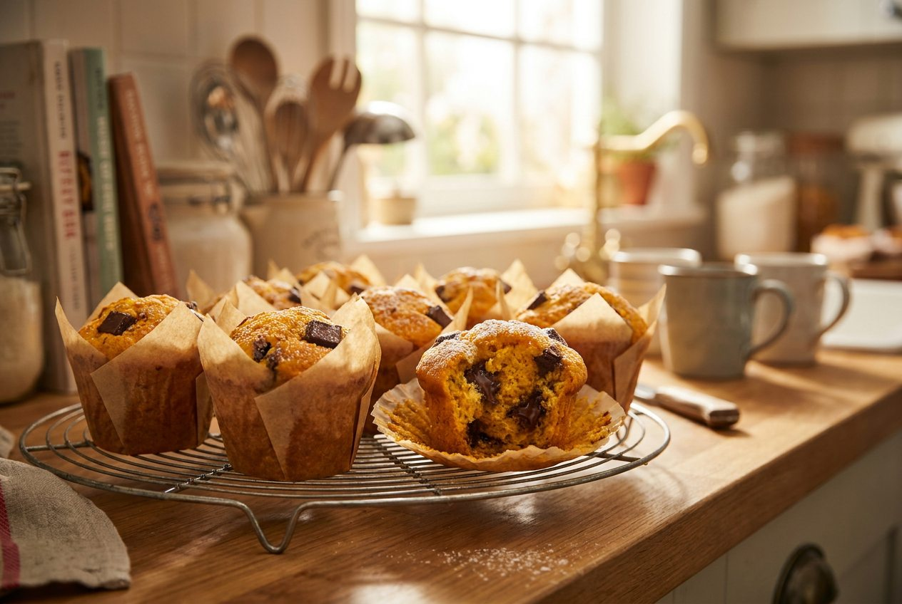

Mixes e matérias-primas de panificação e pastelaria, em grande parte produzidos em Angola, para o seu negócio render todos os dias.

qualidade que inspira resultados perfeitos

Mixes de pão 100%: Rústico · Integral · Multicereais · Centeio da Baviera · Prokorn · Shape · Pão de Forma & Hambúrguer
Melhorantes: Natura 1% · Gold 1% · Fresh 1%
Sementes & decoração: misturas de 2, 3 e 4 sementes · sésamo · decoração de milho
Formatos: sacos de 5, 15 e 25 kg
Pedir cotação
Cakes & batidos: Neutro · Chocolate · Cenoura · Laranja · Ananás · Caramelo · Noz · Muffin · Queque & Bolo de Arroz · Biscuit
Massas lêvedas: Brioche · Bolo Rei
Cremes & coberturas: Creme Pasteleiro Sublime · Chantilly em pó · Icing Sugar · Decor Icing · Cacau em pó · Fermento
Formatos: sacos de 2,5 a 25 kg
Pedir cotação
Importada e selecionada pela nossa equipa para que uma só entrega resolva a sua produção.
Pedir catálogo completo📖 Ver catálogo completo com fichas técnicas
📋 Mais de 60 referências Massa Prima, em sacos de 2,5 a 25 kg — do formato de teste ao industrial. No catálogo online encontra a ficha técnica de cada produto: ingredientes, dosagem, modo de aplicação, valores nutricionais e formatos.
Do nosso forno para o seu balcão: receitas simples com os mixes Massa Prima.
Com o mix Massa Prima Pão Rústico 100%, o pão de fim-de-semana passa a sair todos os dias — mesmo volume, mesma crosta, mesmo miolo.
O Massa Prima Cake Chocolate dá bolos húmidos e fofos com acabamento de pastelaria. Também em cenoura, laranja, ananás, caramelo e noz.

Planeie as fornadas pelos picos de venda da sua zona: manhã cedo e fim de tarde. O Chef Prima ajuda a calcular.
Todo o pão que aquece uma mesa angolana começa no mesmo sítio: numa boa matéria-prima. A Massa Prima nasceu na Quente e Bom com uma convicção — o que os angolanos comem todos os dias merece uma base de primeira, feita cá.
Produzir localmente significa frescura, fornecimento sem sobressaltos e uma equipa que fala a língua de quem está com as mãos na massa.
🌾 Feito em Angola · by quente e bom
Todos os dias, padeiros e pasteleiros angolanos transformam as nossas matérias-primas no pão e nos bolos deste país.


Mais do que matéria-prima: conhecimento para o seu negócio crescer. Aprenda, calcule e pergunte — tudo gratuito.
42 receitas com dosagens oficiais, método passo-a-passo e dicas para vender mais — e vamos juntar novas todos os meses.
Ver receitasDescubra quanto custa cada pão ou fatia e qual o preço de venda certo para ganhar bem.
Calcular agoraO nosso assistente com inteligência artificial conhece os 88 produtos, as receitas e as técnicas. Pergunte-lhe o que quiser, a qualquer hora.
Mais do que vender matéria-prima, ajudamos o seu negócio a crescer.
Dúvidas de fermentação, forno ou conservação? A nossa equipa técnica acompanha a sua produção.
Receitas testadas e dicas práticas para tirar o máximo de cada mix.
Ideias para a vitrine, cálculo de custo por unidade e planeamento de produção.
Quer levar a Massa Prima para a sua produção? Peça o catálogo completo ou fale com a nossa equipa comercial. Respondemos em horário de expediente.
✉️ geral@quenteebom.co.ao
📍 Estrada do Calumbo/Zango, Viana Parque, Armazém 1Q8
Viana — Luanda, Angola